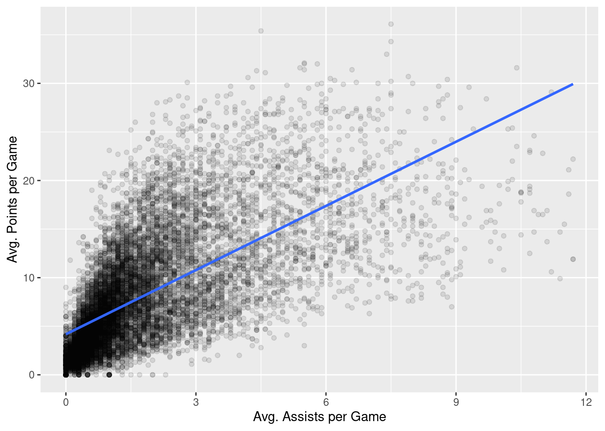
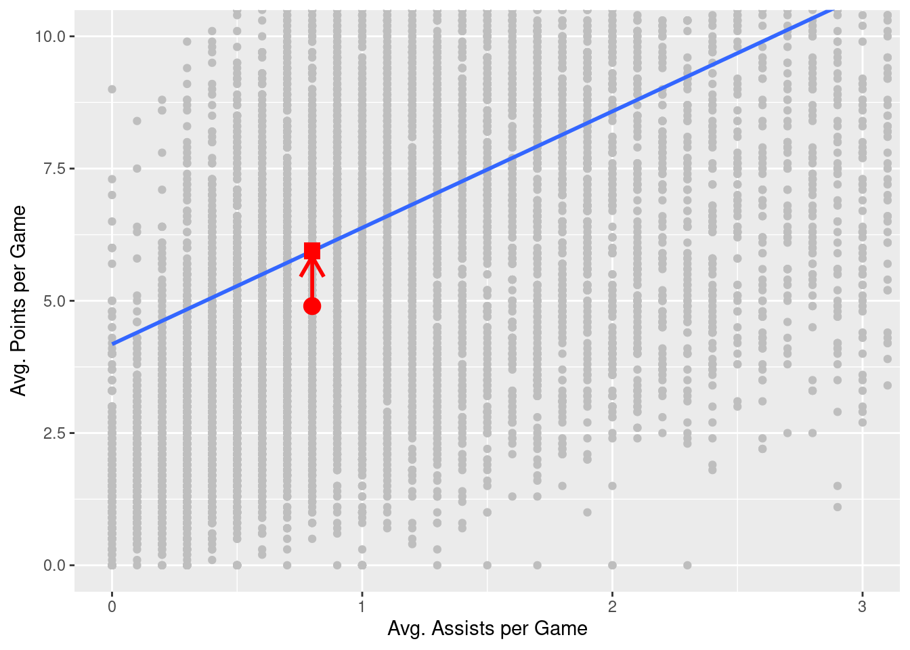
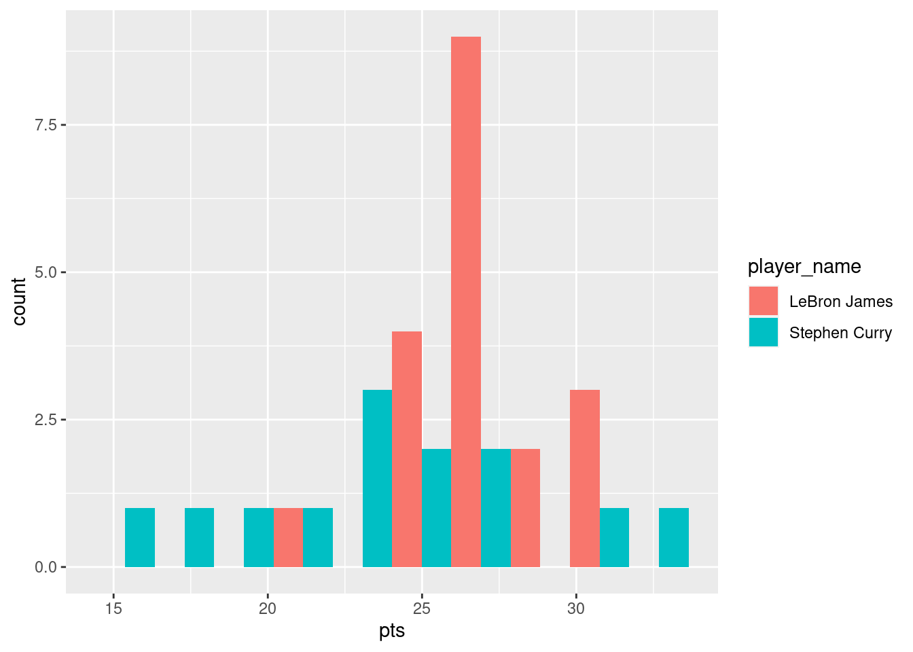

nba_subset <- nba %>%
mutate(season_int = substr(nba$season, start = 1, stop = 4)) %>%
filter(team_abbreviation %in% c("LAL", "NYK", "GSW"))14 Basic Regression
Important
This chapter makes use of the broom package, part of the tidyverse-adjacent family of packages, tidymodels. It can be installed and loaded in the same way that we have installed/loaded other packages (see Section 1.5 for a refresher).
14.1 Metric-Predicted Variable with One Metric Predictor
Imagine we are interested in the following research question: what factors explain the average number of points scored by a player per game (i.e., the values in the pts column of our nba data set)? In this section, we’ll keep things simple for now and try to explain pts as a function of one other variable: the average number of assists by a player per game (i.e., the values in the ast column of our nba data set). Could it be that players making more assists will also score more points? We’ll answer this question by modeling the relationship between points and assists using simple linear regression where we have:
- A numerical outcome variable \(y\) (
pts) and - A single numerical explanatory variable \(x\) (
ast).
To simplify further, let’s confine our investigation to a small number of teams.
It is important to note that the observational unit is an individual player in a given season. Because many players play in more than one season, the same player will appear more than once in the data. Hence there are fewer than 1230 unique players represented in nba_subset. We’ll revisit this idea later, when we talk about the “independence assumption” for inference for regression.
As we saw in Chapter 9, we can visualize how these two variables are related by generating a scatterplot and a best-fitting trend line:
nba %>%
ggplot(aes(x = ast, y = pts)) +
geom_point(alpha = 0.1) +
labs(x = "Avg. Assists per Game",
y = "Avg. Points per Game") +
geom_smooth(method = "lm", se = FALSE)
In Chapter 9, we did not discuss how this best-fitting trend line was generated. That is the topic of this chapter.
14.1.1 Simple linear regression
You may recall that the equation of a line is \(y = a + bx\). It is defined by two parameters \(a\) and \(b\). The intercept, \(a\), is the value of \(y\) when \(x = 0\). The slope, \(b\), is the increase in \(y\) for every increase of one in units of \(x\).
When discussing regression, we will often use different notation in which a line is described as \(\widehat{y} = b_0 + b_1 \cdot x\). The intercept is \(b_0\), so \(b_0\) is the value of \(\widehat{y}\) when \(x = 0\). The slope is \(b_1\), i.e., the increase in \(\widehat{y}\) for every increase in one one in \(x\). Why do we put a “hat” on top of the \(y\)? It’s a form of notation commonly used in statistics to indicate that we have an estimate of \(y\) rather than \(y\) itself.
From inspecting the regression line in Figure 14.1, we know that \(b_1\) is positive. Why? Because players who have higher ast values also tend to have higher pts values. However, what is the numerical value of the slope \(b_1\)? What about the intercept \(b_0\)?
We can obtain values of \(b_0\) and \(b_1\) by using linear regression. This is done in two steps:
- We first fit the linear regression model using the
lm()function and save it inresult. - We get the regression table by applying the
get_regression_table()function from themoderndivepackage toscore_model.
# fit the model
model <- lm(pts ~ ast, data = nba)
# get regression table
summary(model)
Call:
lm(formula = pts ~ ast, data = nba)
Residuals:
Min 1Q Median 3Q Max
-19.3727 -2.9604 -0.8805 2.3586 21.3150
Coefficients:
Estimate Std. Error t value Pr(>|t|)
(Intercept) 4.17998 0.05748 72.72 <2e-16 ***
ast 2.20111 0.02253 97.69 <2e-16 ***
---
Signif. codes: 0 '***' 0.001 '**' 0.01 '*' 0.05 '.' 0.1 ' ' 1
Residual standard error: 4.484 on 12303 degrees of freedom
Multiple R-squared: 0.4369, Adjusted R-squared: 0.4368
F-statistic: 9544 on 1 and 12303 DF, p-value: < 2.2e-16Let’s first focus on interpreting the output, and then we’ll later revisit the code that produced it. In the Estimate column are the estimated values of both the intercept, \(b_0\), and slope, \(b_1\). Thus, the equation of the regression line in Figure Figure 14.1 is:
\[ \begin{aligned} \widehat{y} &= b_0 + b_1 \cdot x\\ \widehat{pts} &= b_0 + b_{ast} \cdot ast\\ &= 4.17998 + 2.20111 \cdot ast \end{aligned} \]
The estiamted value of the intercept, \(b_0 = 4.17998\), is the value of pts expected when \(ast=0\). Or in graphical terms, \(b_0 = 4.17998\) indicates where the regression line intersects the \(y\) axis when \(x=0\). Note, that the intercept always has a natural a mathematical interpretation, it may well not have a practical interpretation. For example, if x were ratings from a scale that ran 1-7, observing \(x=0\) would be impossible.
Typically, the slope \(b_1 = b_{ast} = 2.20111\), is of primary interested, as it summarizes the relationship between ast and pts, the two variables we are investigating. Note that the estimate of \(b_1 = b_{ast}\) is positive, suggesting a positive relationship between these two variables, higher ast values seem to imply pts. The other way we might evaluate this relationship would be to calculate a correlation coefficient:
cor(nba$pts, nba$ast)[1] 0.6609489The correlation coefficient and \(b_1 = b_{ast}\) are both positive, but are different values. The correlation coefficient’s interpretation is often the “strength of linear association”. The interpretation of \(b_1 = b_{ast}\) is a little different:
For every increase of 1 unit in
ast, there is an systematic and corresponding increase of 2.20111 units ofpts.
Note that this statement holds on average. But if you take any two players whose ast values differ by exactly 1 assist, we should not expect their pts values to differ by exactly 2.20111. What \(b_1 = b_{ast} = 2.20111\) means is that across all possible players, the average difference in pts between two instructors whose ast values differ by exactly one is 2.20111.
Now that we’ve learned how to compute the equation for the regression line using the estimated values of \(b_0\) and \(b_1\) and how to interpret the resulting estimates, let’s revisit the code that generated these estimates:
# fit the model
model <- lm(pts ~ ast, data = nba)
# get regression table
summary(model)First, we fit the linear regression model to data (our nba data in this case) using the lm() function and save this as model. When we say “fit”, we mean that we estimate the parameters of our model (\(b_0\) and \(b_1\) using our data). The function lm() constructs our model for us (lm stands for linear model) and is used as follows: lm(y ~ x, data = data_frame_name) where:
yis the target variable, followed by a tilde~. In our case,yis set topts.xis the explanatory variable. In our case,xis set toast.- The combination of
y ~ xis called a model formula. In our case, the model formula ispts ~ ast. Target variables appear on the left hand side of the formula and explanatory variables appear on the right. data_frame_nameis the name of the data frame that contains the variablesyandx. In our case,data_frame_nameis thenbadata frame.
Second, we take the saved model in model and apply the summary() function to obtain a regression table. The summary() function produces four columns: Estimate, Std. Error, t value, and Pr(>|t|). These are the estimated value of each model parameter, the standard error of these estimates, the corresponding \(t\) values, and associated \(p\) values.
14.1.2 Observed values, fitted values, and residuals
We just saw how to get the value of the intercept and the slope of a regression line from the Estimate column of the regression table generated by the summary() function. Let’s say we instead want information on individual observations. For example, let’s focus on a single player. Specifically, let’s pull out the row of nba that is associated with the Chris Clemons, who appears exactly once in our data set. The corresponding row is illustrated in Table 14.1:
| player_name | pts | ast | season | gp |
|---|---|---|---|---|
| Chris Clemons | 4.9 | 0.8 | 2019-20 | 33 |
What is the value \(\widehat{y}\) on the regression line corresponding to this player’s ast value of 0.8? In Figure 14.2, we mark three values corresponding to the player and the associated statistical terms:
- Circle: The observed value, \(y\) = 4.9, is this course’s instructor’s actual teaching score.
- Square: The fitted value, \(\widehat{y}\), is the value on the regression line that corresponds to \(x\) =
ast= 0.8. This value is computed using the intercept and slope in the previous regression table:
\[\widehat{y} = b_0 + b_1 x = 4.180 + 2.201 \cdot 0.8 = 5.9408753\]
- Arrow: The length of this arrow is the residual and is computed by subtracting the fitted value \(\widehat{y}\) from the observed value \(y\). The residual can be thought of as the error the model generates for a particular observation. In the case of this course’s player, the residual is \(y - \widehat{y}\) = 4.9 - 5.9408753 = -1.0408753.

Now say we want to compute both the fitted value, \(\widehat{y} = b_0 + b_1 x\), and the residual, \(y - \widehat{y}\), for all 12305 rows in our nba data set. We could repeat the previous calculations we performed by hand 12305 times, but that would be somewhat time-consuming. Instead, let’s do this using a computer with the get_regression_points() function. Just like the get_regression_table() function, the get_regression_points() function is a “wrapper” function. However, this function returns a different output. Let’s apply the get_regression_points() function to score_model, which is where we saved our lm() model in the previous section. In Table @ref(tab:regression-points-1) we present the results of only the 21st through 24th courses for brevity’s sake.
model %>%
# expand model result
augment() %>%
# select relevant columns
select(c("pts", "ast", ".fitted", ".resid")) %>%
# rename columns
rename_at(vars(c(".fitted", ".resid")), ~c("pts_hat", "residual"))# A tibble: 12,305 × 4
pts ast pts_hat residual
<dbl> <dbl> <dbl> <dbl>
1 5.7 3.1 11.0 -5.30
2 2.3 0.3 4.84 -2.54
3 0.8 0.4 5.06 -4.26
4 3.7 0.6 5.50 -1.80
5 2.4 0.2 4.62 -2.22
6 8.2 1 6.38 1.82
7 17.2 3.4 11.7 5.54
8 14.9 1.6 7.70 7.20
9 5.7 1.3 7.04 -1.34
10 6.9 3 10.8 -3.88
# ℹ 12,295 more rowsLet’s inspect the individual columns and match them with the elements of Figure 14.2:
- The
ptscolumn represents the observed outcome variable, \(y\). This column contains the y-position of the 12305 gray data points. - The
astcolumn represents the values of the explanatory variable, \(x\). This is the x-position of the 12305 gray data points. - The
pts_hatcolumn represents the fitted values \(\widehat{y}\). This is the corresponding value on the regression line for the 12305 \(x\) values. - The
residualcolumn represents the residuals \(y - \widehat{y}\). This is the 12305 vertical distances between the 12305 black points and the regression line.
Just as we did for Chris Clemons’ single row from nba, one can now repeat the calculations for any particular data point (row) in the nba data set or, if you so wish, do so for all rows.
In a bit, we’ll talk about how conventional (“ordinary least squares”) regression takes each of these residuals, squares them (so they are all positive), and finds the model parameters (e.g., \(b_0\) and \(b_1\)) that minimize their sum.
14.2 Metric-Predicted Variable with One Dichotomous Predictor
Let’s take a step back now and consider a somewhat simpler scenario. Imagine two basketball fans are arguing over who is the better player, Stephen Curry or LeBron James. Curry is a fantastic shooter, but James has more offensive tools at his disposal (e.g., he is much larger and physically stronger). How can we use data to help provide some evidence for this debate? One way we can do so is to compare the average points per game scored by each player (i.e., the data in the pts column of our nba data set). Let’s do that.
14.2.1 Exploratory data analysis
Let’s begin with an exploration of the relevant data. We can do this is a couple of different ways (see Chapter 9 for options). For example, we can begin by looking at the data itself.
nba %>%
filter(player_name %in% c("Stephen Curry", "LeBron James")) %>%
select(player_name, pts)# A tibble: 32 × 2
player_name pts
<chr> <dbl>
1 LeBron James 20.9
2 LeBron James 27.2
3 LeBron James 31.4
4 LeBron James 27.3
5 LeBron James 30
6 LeBron James 28.4
7 Stephen Curry 17.5
8 LeBron James 29.7
9 Stephen Curry 18.6
10 LeBron James 26.7
# ℹ 22 more rowsHere, we see the pts column that we are focusing on and the players’ names. There are only a few rows of data here, so viewing the first few rows gives us a decent sense of what the relevant data looks like. If we had a large number of rows or if the rows were ordered in a particular way (e.g., all of Stephen Curry’s rows were grouped before all of LeBron James’ rows), then we might instead wish to view a random sample of rows.
nba %>%
filter(player_name %in% c("Stephen Curry", "LeBron James")) %>%
select(player_name, pts) %>%
sample_n(10)# A tibble: 10 × 2
player_name pts
<chr> <dbl>
1 LeBron James 25.3
2 LeBron James 26.8
3 LeBron James 27.3
4 LeBron James 26.4
5 LeBron James 25.3
6 LeBron James 26.7
7 LeBron James 27.4
8 Stephen Curry 18.6
9 LeBron James 30.3
10 Stephen Curry 24 Another way to get a sense of this data is by generating a variety of descriptive statistics.
nba %>%
filter(player_name %in% c("Stephen Curry", "LeBron James")) %>%
select(player_name, pts) %>%
group_by(player_name) %>%
summarize(
m = mean(pts),
sd = sd(pts),
min = min(pts),
"%25 Q" = quantile(pts, .25),
"%50 Q" = quantile(pts, .5),
"%75 Q" = quantile(pts, .75),
max = max(pts)
)# A tibble: 2 × 8
player_name m sd min `%25 Q` `%50 Q` `%75 Q` max
<chr> <dbl> <dbl> <dbl> <dbl> <dbl> <dbl> <dbl>
1 LeBron James 27.1 2.35 20.9 25.8 27.1 28.0 31.4
2 Stephen Curry 23.8 4.92 14.7 20.8 24 26.4 32 Here, we observe that the LeBron James’ average across seasons is 27.1 whereas Stephen Curry’s average is 23.8. Indeed, James has higher values than Curry at each quantile as well. Let’s visualize the actual distribution that these summary statistics describe:
nba %>%
filter(player_name %in% c("Stephen Curry", "LeBron James")) %>%
ggplot(mapping = aes(x = pts, fill = player_name)) +
geom_histogram(bins = 10, position = "dodge")
Some people prefer comparing the distributions of a numerical variable between different levels of a categorical variable using a boxplot instead of a faceted histogram. This is because we can make quick comparisons between the categorical variable’s levels with imaginary horizontal lines. This is particularly true when the categorical variable of interest takes on many levels. Let’s take a quick look.
nba %>%
filter(player_name %in% c("Stephen Curry", "LeBron James")) %>%
ggplot(aes(x = player_name, y = pts)) +
geom_boxplot() +
labs(x = "Player", y = "Avg. Points per Game")
This visualization reiterates that LeBron James’ median (the solid line in the middle of the left box) are greater than Stephen Curry’s, but we can also more easily see that Stephen Curry’s values are more spread out; there is greater variability in Curry’s pts values across seasons.
All of these explorations seem to suggest that LeBron James is a better scorer than Stephen Curry. But we really need some inferential statistics to determine whether the difference between the two players’ means is large enough to convince us to reject the null hypothesis that the two players’ means are equal (and treat LeBron James’ mean as larger than Stephen Curry’s mean).
14.2.2 Linear regression
In Section 14.1.1, we introduced simple linear regression, which involves modeling the relationship between a numerical outcome variable \(y\) and a numerical explanatory variable \(x\). In the current situation, we instead have a categorical explanatory variable player_name. Furthermore, this categorical variable takes on exactly two values (i.e., “LeBron James” and “Stephen Curry”), which means that our explanatory variable is dichotomous.
Before we begin putting our regression model together, let’s grab the relevant data and save into a variable for less verbose code:
curryjames <- nba %>%
filter(player_name %in% c("Stephen Curry", "LeBron James")) %>%
select(c(pts, player_name))Now we can construct the model, fit it to the data, and summarize our results as we did before.
curryjames_model <- lm(pts ~ player_name, data = curryjames)
summary(curryjames_model)
Call:
lm(formula = pts ~ player_name, data = curryjames)
Residuals:
Min 1Q Median 3Q Max
-9.062 -1.810 0.064 1.951 8.239
Coefficients:
Estimate Std. Error t value Pr(>|t|)
(Intercept) 27.1105 0.8268 32.790 <2e-16 ***
player_nameStephen Curry -3.3490 1.2972 -2.582 0.015 *
---
Signif. codes: 0 '***' 0.001 '**' 0.01 '*' 0.05 '.' 0.1 ' ' 1
Residual standard error: 3.604 on 30 degrees of freedom
Multiple R-squared: 0.1818, Adjusted R-squared: 0.1545
F-statistic: 6.665 on 1 and 30 DF, p-value: 0.01496We have two rows in our regression table: (Intercept) and player_nameStephen Curry. We specified our model as pts ~ player_name. But what exactly is happening behind the scenes? One way to investigate is to look at the design matrix that lm() has constructed on our behalf:
model.matrix(curryjames_model) (Intercept) player_nameStephen Curry
1 1 0
2 1 0
3 1 0
4 1 0
5 1 0
6 1 0
7 1 1
8 1 0
9 1 1
10 1 0
11 1 1
12 1 0
13 1 1
14 1 0
15 1 1
16 1 0
17 1 0
18 1 1
19 1 0
20 1 1
21 1 1
22 1 0
23 1 1
24 1 0
25 1 1
26 1 0
27 1 0
28 1 1
29 1 0
30 1 1
31 1 1
32 1 0
attr(,"assign")
[1] 0 1
attr(,"contrasts")
attr(,"contrasts")$player_name
[1] "contr.treatment"To better understand how this design matrix encodes our raw data, we can squash to two together for easy comparison:
bind_cols(curryjames, model.matrix(curryjames_model))# A tibble: 32 × 4
pts player_name `(Intercept)` `player_nameStephen Curry`
<dbl> <chr> <dbl> <dbl>
1 20.9 LeBron James 1 0
2 27.2 LeBron James 1 0
3 31.4 LeBron James 1 0
4 27.3 LeBron James 1 0
5 30 LeBron James 1 0
6 28.4 LeBron James 1 0
7 17.5 Stephen Curry 1 1
8 29.7 LeBron James 1 0
9 18.6 Stephen Curry 1 1
10 26.7 LeBron James 1 0
# ℹ 22 more rowsNow we can see that lm() has constructed a design matrix with two columns (one named (Intercept) and one named player_nameStephen Curry). Every value in the intercept column is 1. The values in the player_nameStephen Curry column are 1 where player_name == Stephen Curry and 0 where player_name == LeBron James.
Let’s now write the equation for our fitted values \(\widehat{y} = \widehat{\text{pts}}\):
\[ \begin{aligned} \widehat{y} = \widehat{pts} &= b_0 + b_1\cdot\mathbb{1}_{\text{Curry}}(x) \end{aligned} \]
What is happening here? First, \(\mathbb{1}_{A}(x)\) is what’s known in mathematics as an “indicator function”. It returns only one of two possible values, 0 and 1, where
\[ \mathbb{1}_{A}(x) = \left\{ \begin{array}{ll} 1 & \text{if } x \text{ is in } A \\ 0 & \text{if } \text{otherwise} \end{array} \right. \]
In a statistical modeling context, this is also known as a dummy variable. In our case, the indicator variable \(\mathbb{1}_{\text{Curry}}(x)\) returns 1 if a row of data corresponds to an observation associated with Stephan Curry and 0 otherwise (which is exactly what is in the curry column of our design matrix above):
\[ \mathbb{1}_{\text{Curry}}(x) = \left\{ \begin{array}{ll} 1 & \text{if } \text{player } x \text{ is Stephen Curry} \\ 0 & \text{otherwise}\end{array} \right. \]
Thus, we can consider two different scenarios. The first, is what the model looks like when we are considering observations from LeBron James. At that point, \(\mathbb{1}_{\text{Curry}}(x)=0\), so the model reduces to:
\[ \begin{aligned} \widehat{pts} &= b_0 + b_1\cdot\mathbb{1}_{\text{Curry}}(x) \\ \widehat{pts} &= b_0 + b_1\cdot 0 \\ \widehat{pts} &= b_0 \end{aligned} \]
This suggests that \(b_0\) represents our expectation about the value of pts associated with LeBron James. Now let’s consider what the model looks like when we are considering observations from Stephen Curry. At that point, \(\mathbb{1}_{\text{Curry}}(x)=1\), so the model is:
\[ \begin{aligned} \widehat{pts} &= b_0 + b_1\cdot\mathbb{1}_{\text{Curry}}(x) \\ \widehat{pts} &= b_0 + b_1\cdot 1 \\ \widehat{pts} &= b_0 + b_1 \end{aligned} \]
So what does this suggest about the interpretation of \(b_1\)? Well we already said that \(b_0\) is our expectation about LeBron James’ value of pts. And our expectation about Stephen Curry’s value of pts is \(b+0 + b_1\). This implies that \(b_1\) represents the difference between those two expectations: we expect Stephen Curry’s pts to be \(b_1\) points greater than LeBron James’ pts. You may also think of \(b_1\) as an offset.
So returning to our regression table, we can see that the table indicates that \(b_0=27.1105\) and \(b_1=-3.3490\). So we should expect that LeBron James’ pts values are 27.11 on average. Furthermore, we should expect that Stephen Curry’ pts values should be 3.35 points less than LeBron James’ (less because the coefficient is negative). Let’s compare that to the means of the actual data:
curryjames %>%
group_by(player_name) %>%
summarize(mean = mean(pts))# A tibble: 2 × 2
player_name mean
<chr> <dbl>
1 LeBron James 27.1
2 Stephen Curry 23.8So our coefficient values and the interpretation we described above seem to match.
You might be asking at this point why was LeBron James chosen as the “baseline” and Stephen Curry appears in the model as an offset. This is the case for no other reason than LeBron James appears first in our curryjames data frame. Good question.
It turns out that we have allows the lm() function to do some “bookkeeping” work on our behalf. When we look at our data, we see that the player_name column is <chr>, or a character vector (aka, a string). But we can’t really do math on strings. So what we really need to do is convert these strings into a categorical variable. To do this, we can use R’s factors.
14.2.3 Brief detour about factors
When you have a column that is a character vector (or other data type) and you wish to treat it as a categorical variable, you can use the tidyverse package forcats. One of the core functions in the forcats package is fct(). This function does exactly what we need: converts a vector as a factor or categorical variable. Let’s see what fct() does for our player_name column:
fct(curryjames$player_name) [1] LeBron James LeBron James LeBron James LeBron James LeBron James
[6] LeBron James Stephen Curry LeBron James Stephen Curry LeBron James
[11] Stephen Curry LeBron James Stephen Curry LeBron James Stephen Curry
[16] LeBron James LeBron James Stephen Curry LeBron James Stephen Curry
[21] Stephen Curry LeBron James Stephen Curry LeBron James Stephen Curry
[26] LeBron James LeBron James Stephen Curry LeBron James Stephen Curry
[31] Stephen Curry LeBron James
Levels: LeBron James Stephen CurryIt doesn’t really look like fct() has done too much to our column. The only real addition is the “Levels: LeBron James Stephen Curry” at the bottom. Note that “LeBron James” comes before “Stephen Curry” here. That’s an indication of the order in which the 2 levels exist in the factor. To gain direct control over how player_name is used as a predictor in our regression model, we can create a new column that is a factor version of the player_name column:
curryjames$player_name.f <- fct(curryjames$player_name)Now let’s use this new variable as our predictor and see what happens:
summary(lm(pts ~ curryjames$player_name.f, data=curryjames))
Call:
lm(formula = pts ~ curryjames$player_name.f, data = curryjames)
Residuals:
Min 1Q Median 3Q Max
-9.062 -1.810 0.064 1.951 8.239
Coefficients:
Estimate Std. Error t value Pr(>|t|)
(Intercept) 27.1105 0.8268 32.790 <2e-16 ***
curryjames$player_name.fStephen Curry -3.3490 1.2972 -2.582 0.015 *
---
Signif. codes: 0 '***' 0.001 '**' 0.01 '*' 0.05 '.' 0.1 ' ' 1
Residual standard error: 3.604 on 30 degrees of freedom
Multiple R-squared: 0.1818, Adjusted R-squared: 0.1545
F-statistic: 6.665 on 1 and 30 DF, p-value: 0.01496Other than the slightly more verbose name of our predictor (curryjames$player_name.fStephen Curry), the results are the same. Using another forcats, we can instead construct our player_name factor so that Stephen Curry is used as the baseline:
curryjames$player_name.f <- fct_rev(curryjames$player_name)The fct_rev() function is just like fct(), but it reverses the order of the levels on the factor.
summary(lm(pts ~ curryjames$player_name.f, data=curryjames))
Call:
lm(formula = pts ~ curryjames$player_name.f, data = curryjames)
Residuals:
Min 1Q Median 3Q Max
-9.062 -1.810 0.064 1.951 8.239
Coefficients:
Estimate Std. Error t value Pr(>|t|)
(Intercept) 23.7615 0.9995 23.772 <2e-16 ***
curryjames$player_name.fLeBron James 3.3490 1.2972 2.582 0.015 *
---
Signif. codes: 0 '***' 0.001 '**' 0.01 '*' 0.05 '.' 0.1 ' ' 1
Residual standard error: 3.604 on 30 degrees of freedom
Multiple R-squared: 0.1818, Adjusted R-squared: 0.1545
F-statistic: 6.665 on 1 and 30 DF, p-value: 0.01496Let’s generalize this idea a bit. If we fit a linear regression model using a categorical explanatory variable \(x\) that has \(k\) possible categories, the regression table will return an intercept and \(k - 1\) “offsets”. In our case, since there are \(k = 2\) players in our reduced curryjames data set, the regression model returns an intercept corresponding to the baseline for one player and \(k - 1 = 1\) offsets corresponding to the other.
Understanding a regression table output when you’re using a categorical explanatory variable is a topic those new to regression often struggle with. The only real remedy for these struggles is practice, practice, practice. However, once you equip yourselves with an understanding of how to create regression models using categorical explanatory variables, you’ll be able to incorporate many new variables into your models, given the large amount of the world’s data that is categorical.